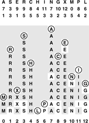
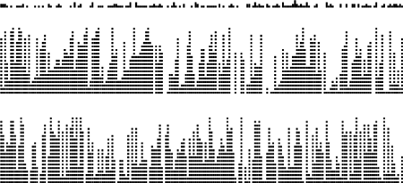
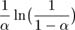
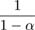
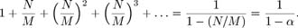
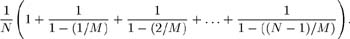
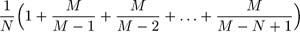
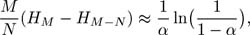
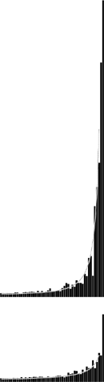

C++ Programming Robert Sedgewick - Princeton University Addison Wesley Professional Algorithms in C++, Parts 1–4: Fundamentals, Data Structure, Sorting, Searching, Third Edition C++ Programming Robert Sedgewick - Princeton University Addison Wesley Professional Algorithms in C++, Parts 1–4: Fundamentals, Data Structure, Sorting, Searching, Third Edition
14.4. Double Hashing
The operative principle of linear probing (and indeed of any hashing method) is a guarantee that, when we are searching for a particular key, we look at every key that hashes to the same table address (in particular, the key itself, if it is in the table). In an open addressing scheme, however, other keys are typically also examined, particularly when the table begins to fill up. In the example depicted in Figure 14.7, a search for N involves looking at C, E. R, and I, none of which had the same hash value. What is worse, insertion of a key with one hash value can drastically increase the search times for keys with other hash values: in Figure 14.7, the insertion of M caused increased search times for positions 7 – 12 and 0 – 1. This phenomenon is called clustering because it has to do with the process of cluster formation. It can make linear probing run slowly for nearly full tables.
Fortunately, there is an easy way to virtually eliminate the clustering problem: double hashing. The basic strategy is the same as for linear probing; the only difference is that, instead of examining each successive table position following a collision, we use a second hash function to get a fixed increment to use for the probe sequence. An implementation is given in Program 14.6.
The second hash function must be chosen with some care, since otherwise the program may not work at all. First, we must exclude the case where the second hash function evaluates to 0, since that would lead to an infinite loop on the very first collision. Second, it is important that the value of the second hash function be relatively prime to the table size, since otherwise some of the probe sequences could be very short (for example, consider the case where the table size is twice the value of the second hash function). One way to enforce this policy is to make M prime and to choose a second hash function that returns values that are less than M. In practice, a simple second hash function such as
inline int hashtwo(Key v) { return (v % 97) + 1; }
will suffice for many hash functions, when the table size is not small. Also in practice, any loss in efficiency that is due to this simplification is not likely to be noticeable, much less to be significant. If the table is huge and sparse, the table size itself does not need to be prime because just a few probes will be used for every search (although we might want to test for and abort long searches to guard against an infinite loop, if we cut this corner (see Exercise 14.38)).
Program 14.6. Double hashing|
Double hashing is the same as linear probing except that we use a second hash function to determine the search increment to use after each collision. The search increment must be nonzero, and the table size and the search increment should be relatively prime. The remove function for linear probing (see Program 14.5) does not work with double hashing, because any key might be in many different probe sequences.
void insert(Item item)
{ Key v = item.key();
int i = hash(v, M), k = hashtwo(v, M);
while (!st[i].null()) i = (i+k) % M;
st[i] = item; N++;
}
Item search(Key v)
{ int i = hash(v, M), k = hashtwo(v, M);
while (!st[i].null())
if (v == st[i].key()) return st[i];
else i = (i+k) % M;
return nullItem;
}
|
Figure 14.9 shows the process of building a small table with double hashing; Figure 14.10 shows that double hashing results in many fewer clusters (which are therefore much shorter) than the clusters left by linear probing.
This diagram shows the process of inserting the keys A S E R C H I N G X M P L into an initially empty hash table with open addressing, using the hash values given at the top and resolving collisions with double hashing. The first and second hash values for each key appear in the two rows below that key. As in Figure 14.7, table positions that are probed are unshaded. The A goes into position 7, then the S goes into position 3, then the E goes into position 9, as in Figure 14.7, but the R goes into position 1 after the collision at position 9, using its second hash value of 5 for the probe increment after collision. Similarly, P goes into position 6 on the final insertion after collisions at positions 8, 12, 3, 7, 11, and 2, using its second hash value 4 as the probe increment.

These diagrams show the placement of records as we insert them into a hash table using linear probing (center) and double hashing (bottom), with the key value distribution shown at the top. Each line shows the result of inserting 10 records. As the table fills, the records cluster together into sequences separated by empty table positions. Long clusters are undesirable because the average cost of searching for one of the keys in the cluster is proportional to the cluster length. With linear probing, the longer clusters are, the more likely they are to increase in length, so a few long clusters dominate as the table fills up. With double hashing, this effect is much less pronounced, and the clusters remain relatively short.

Property 14.4. When collisions are resolved with double hashing, the average number of probes required to search in a hash table of size M that contains N = αM keys is|

and

for hits and misses, respectively.
These formulas are the result of a deep mathematical analysis done by Guibas and Szemeredi (see reference section). The proof is based on showing that double hashing is nearly equivalent to a more complicated random hashing algorithm where we use a key-dependent sequence of probe positions with each probe equally likely to hit each table position. This algorithm is only an approximation to double hashing for many reasons: for example, we take pains in double hashing to ensure that we try every table position once, but random hashing could examine the same table position more than once. Still, for sparse tables, the probabilities of collisions for the two methods are similar. We are interested in both: Double hashing is easy to implement, whereas random hashing is easy to analyze.
The average cost of a search miss for random hashing is given by the equation

The expression on the left is the sum of the probability that a search miss uses more than k probes, for k = 0,1,2,... (and is equal to the average from elementary probability theory). A search always uses one probe, then needs a second probe with probability N/M, a third probe with probability (N/M)2, and so forth. We can also use this formula to compute the following approximation to the average cost of a search hit in a table with N keys:

Each key in the table is equally likely to be hit; the cost of finding a key is the same as the cost of inserting it; and the cost of inserting the jth key in the table is the cost of a search miss in a table of j – 1 keys, so this formula is the average of those costs. Now, we can simplify and evaluate this sum by multiplying the top and bottom of all the fractions by M:

and further simplify to get the result

since HM  ln M. ln M.
The precise nature of the relationship between the performance of double hashing and the random-hashing ideal that was proven by Guibas and Szemeredi is an asymptotic result that need not be relevant for practical table sizes; moreover, the results rest on the assumption that the hash functions return random values. Still, the asymptotic formulas in Property 14.5 are accurate predictors of the performance of double hashing in practice, even when we use an easy-to-compute second hash function such as (v % 97)+1. As do the corresponding formulas for linear probing, these formulas approach infinity as α approaches 1, but they do so much more slowly.
|
The contrast between linear probing and double hashing is illustrated clearly in Figure 14.11. Double hashing and linear probing have similar performance for sparse tables, but we can allow the table to become more nearly full with double hashing than we can with linear probing before performance degrades. The following table summarizes the expected number of probes for search hits and misses with double hashing:
These plots show the costs of building a hash table of size 1000 by inserting keys into an initially empty table using linear probing (top) and double hashing (bottom). Each bar represents the cost of 20 keys. The gray curves show the costs predicted by theoretical analysis (see Properties 14.4 and 14.5).

load factor(α) | 1/2 | 2/3 | 3/4 | 9/10 |
|---|
search hit | 1.4 | 1.6 | 1.8 | 2.6 | search miss | 1.5 | 2.0 | 3.0 | 5.5 |
Search misses are always more expensive than hits, and both require only a few probes, on the average, even in a table that is nine-tenths full.
Looking at the same results in another way, double hashing allows us to use a smaller table than we would need with linear probing to get the same average search times.
Property 14.5. We can ensure that the average cost of all searches is less than t probes by keeping the load factor less than for linear probing and less than 1 – 1/t for double hashing
For example, to ensure that the average number of probes for a search is less than 10, we need to keep the table at least 32 percent empty for linear probing, but only 10 percent empty for double hashing. If we have 105 items to process, we need space for just another 104 items to be able to do unsuccessful searches with fewer than 10 probes. By contrast, separate chaining would require more than 105 links, and BSTs would require twice that many.
The method of Program 14.5 for implementing the remove operation (rehash the keys that might have a search path containing the item to be deleted) breaks down for double hashing, because the deleted key might be in many different probe sequences, involving keys throughout the table. Thus, we have to resort to the other method that we considered at the end of Section 12.3: We replace the deleted item with a sentinel that marks the table position as occupied but does not match any key (see Exercise 14.33).
Like linear probing, double hashing is not an appropriate basis for implementing a full-function symbol table ADT where we need to support the sort or select operations.
Exercises |  14.31 Give the contents of the hash table that results when you insert items with the keys E A S Y Q U T I O N in that order into an initially empty table of size M = 16 using double hashing. Use the hash function 11k mod M for the initial probe and the second hash function (k mod 3) + 1 for the search increment (when the key is the kth letter of the alphabet). 14.31 Give the contents of the hash table that results when you insert items with the keys E A S Y Q U T I O N in that order into an initially empty table of size M = 16 using double hashing. Use the hash function 11k mod M for the initial probe and the second hash function (k mod 3) + 1 for the search increment (when the key is the kth letter of the alphabet).
| | 14.32 Answer Exercise 14.31 for M = 10 | | 14.33 Implement deletion for double hashing, using a sentinel item. | | | | 14.34 Modify your solution to Exercise 14.27 to use double hashing. | | 14.35 Modify your solution to Exercise 14.28 to use double hashing. | | 14.36 Modify your solution to Exercise 14.29 to use double hashing. | |  14.37 Implement an algorithm that approximates random hashing, by providing the key as a seed to an in-line random number generator (as in Program 14.2). 14.37 Implement an algorithm that approximates random hashing, by providing the key as a seed to an in-line random number generator (as in Program 14.2).
| | 14.38 Suppose that a table of size 106 is half full, with occupied positions chosen at random. Estimate the probability that all positions with indices divisible by 100 are occupied. | | 14.39 Suppose that you have a bug in your double-hashing code such that one or both of the hash functions always return the same value (not 0). Describe what happens in each of these situations: (i) when the first one is wrong (ii) when the second one is wrong, and (iii) when both are wrong. |
|